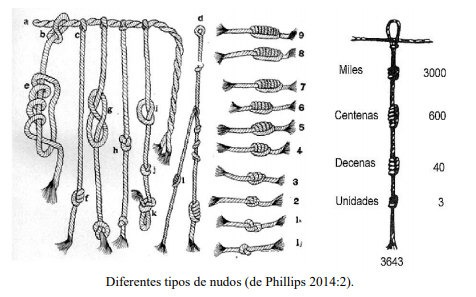

LITERATURA PERUANA QUECHUA
La literatura Quechua es el conjunto de manifestaciones literarias que existieron antes de la llegada de los españoles. La producción literaria prehispánica está conformada por textos orales, registros, inscripciones y escritos elaborados por los integrantes de las culturas originarias de América Central y de Sudamérica previa a la (legada de Cristóbal Colón a esta parte del mundo. Se inicia desde la consolidación incaica (siglo XII) hasta la llegada de los españoles (153La literatura Quechua es el conjunto de manifestaciones literarias que existieron antes de la llegada de los españoles. La producción literaria prehispánica está conformada por textos orales, registros, inscripciones y escritos elaborados por los integrantes de las culturas originarias de América Central y de Sudamérica previa a la (legada de Cristóbal Colón a esta parte del mundo. Se inicia desde la consolidación incaica (siglo XII) hasta la llegada de los españoles (1532), año en que se inicia también la destrucción del imperio Inca.2), año en que se inicia también la destrucción del imperio Inca.
La literatura quechua llamada también prehispánica tiene su concreción en la tradición oral. El imperio incaico apogeo y sincretismo de las diversas culturas del Perú prehispánico desarrolló una práctica cultural profusa en la cual encontramos a la literatura oral, al no existir una escritura dicha literatura se sirvió de la oralidad y de la memoria colectiva. Las personajes encargados de la transmisión cultural a otras generaciones de toda la tradición oral eran los Amautas (Maestros que tenían a su cargo la difusión y preservación de la cultura inca en los Yachayhuasis (escuelas)) y los Quipucamayos (interpretadores de los quipus). Los idiomas importantes del Imperio fueron el aimara y el quechua, en ésta última denominada Runasimi se dieron las principales manifestaciones literarias debido a su carácter de oficial. Se desarrollaron todos los géneros siendo el más abundante el lírico. Su visión del mundo era muy particular y se muestra en el siguiente gráfico.

La literatura es el reflejo de un pueblo, de su espíritu, de su sensibilidad, de su cultura. En el extenso territorio del Tahuantinsuyo, nuestros antepasados crearon una gran organización económica, política, social y un arte propio. Este gran imperio estaba dividido en cuatro grandes suyos. Sin embargo, los incas no conocieron la escritura, pero las evidencias dejadas en pictografías en piedras denominadas quilcas permanecen todavía herméticas en su mensaje, y los quipus en el cual se registraba información de ayuda contable e histórica.